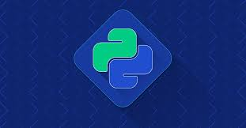

Futuro das linguagens
O mundo da programçao avolui constantemente, ficando a pergunta de como as linguagens vão estar daqui a 20 anos, bom não á como saber exatamente mas vendo a situação do mercado de trabalho atual algumas linguagens vão durar por muitos anos.
Python é uma das linguagens que esta mais em alta nos ultimos tempos, sendo muitos presente para quem trabalha com IA's e machine learning, o constante crescimento dessas areas fará essa linguagem durar por bons anos.
Agora falando um pouco do nosso querido JavaScript (js) é uma linguagem que esta muito presente em inumeras areas, sendo requisitada principalmente no front-and melhorando muito a experiencia do usuario. O js vai durar por muitos anos no mercado por conta da sua demanda nos ultimos tempos, é uma boa para se aprimorar dando uma margem boa para o mundo do trabalho nesta area
HTML e CSS
Saindo um pouco das linguagem de programçao vamos falar um pouco sobre as ferramentas que auxilian o programador front-and. O HTML a grosso modo é um marcador de hiper textos e o CSS é uma linguagem de estilos, explicado isso podemos falar que são muito boas no que fazem mas tem chance de mudarem futuramente, mas particularmente falando acredito que ira demorar um pouco para serem subistituidas, são muito presentes no dia a dia de muitos programades, fora que estão em constante evolução.